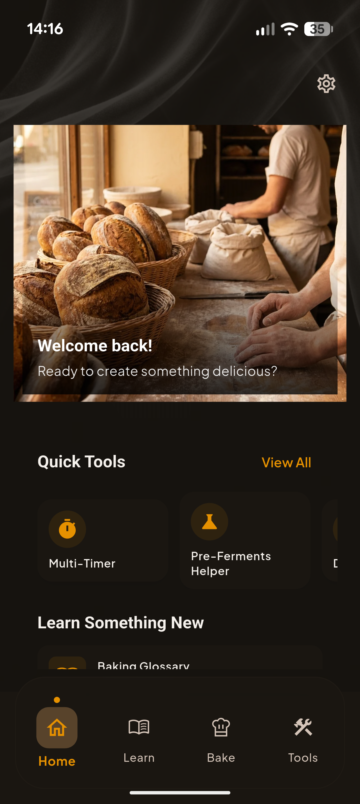
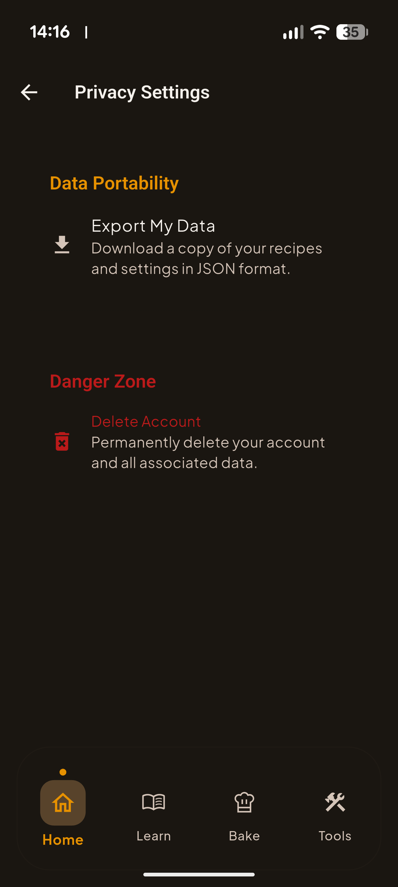

The Baker
Data Deletion Guide
Managing Your Data
Your privacy matters to us. The Baker gives you full control over your data. This guide explains how to export or permanently delete your information directly from the app.
How to Delete Your Data
Follow these steps to access data management options in The Baker app:
-
Open The Baker App
Launch the app on your device.
-
Go to Settings
Tap the gear icon (⚙️) or navigate to the Settings page from the main menu.

-
Find the Privacy Section
Scroll down to locate the "Privacy" section in Settings.
-
Tap "Privacy Settings"
This opens the data management page where you can export or delete your data.

-
Choose Your Action
Select one of the following options:
-
Confirm Deletion
When prompted, confirm that you want to permanently delete your data. This action cannot be undone.
Account deletion is permanent and cannot be undone. We recommend exporting your data first if you want to keep a backup of your recipes.
What Gets Deleted
When you delete your account, the following data is permanently removed:
- Your saved recipes and customizations
- App settings and preferences
- Your account profile information
- Authentication tokens and session data
- Any data stored on our servers
Our Privacy-First Approach
The Baker is designed with privacy in mind. Most of your data (recipes, timers, settings) is stored locally on your device — we don't have access to it.
We use Firebase services for crash reporting and basic analytics to improve the app. These collect only anonymous identifiers, not personal information.
Need Help?
If you have any questions about your data or need assistance,
please contact us at:
support@indiedesert.com